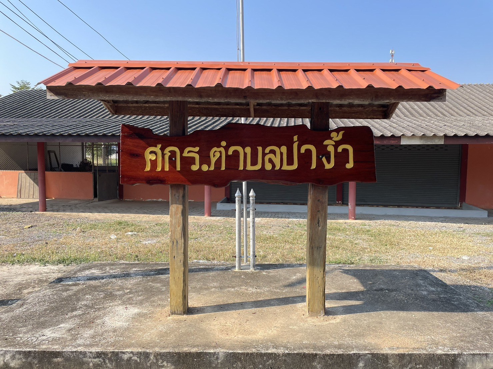

ข้อมูลพื้นฐานของสถานศึกษา
ศูนย์การเรียนรู้ระดับตำบลป่างิ้ว · สังกัดศูนย์ส่งเสริมการเรียนรู้ระดับอำเภอศรีสัชนาลัย
ศกร.ระดับตำบลป่างิ้ว
อาคารอเนกประสงค์บ้านทุ่งพล้อ หมู่ที่ 3 ตำบลป่างิ้ว อำเภอศรีสัชนาลัย จังหวัดสุโขทัย 64130
สังกัดศูนย์ส่งเสริมการเรียนรู้ระดับอำเภอศรีสัชนาลัย สำนักงานส่งเสริมการเรียนรู้ประจำจังหวัดสุโขทัย กรมส่งเสริมการเรียนรู้ กระทรวงศึกษาธิการ
ครูผู้รับผิดชอบ: นางสิเรียม เผ่าเสรีพงษ์
โทรศัพท์ 093-984-1105 · โทรสาร 055-671099
เปิดแผนที่ / นำทาง ↗
ประวัติความเป็นมา
1. จุดเริ่มต้นและการก่อตั้ง (พ.ศ. 2551–2552)
ศูนย์การเรียนรู้ระดับตำบลป่างิ้ว หรือชื่อเดิม “กศน.ตำบลป่างิ้ว” เริ่มดำเนินงานด้านการจัดการศึกษานอกระบบและการศึกษาตามอัธยาศัย ตั้งแต่ปี พ.ศ. 2551 โดยมี ครูศุภกฤษ์ จันทร์ศรี ปฏิบัติหน้าที่ครูประจำกลุ่มในขณะนั้น เพื่อจัดกิจกรรมการเรียนรู้และส่งเสริมโอกาสทางการศึกษาให้แก่ประชาชนในพื้นที่ตำบลป่างิ้ว อำเภอศรีสัชนาลัย จังหวัดสุโขทัย
ต่อมาในเดือนธันวาคม พ.ศ. 2552 นางสมหมาย ยงญาติ ได้เข้ามาปฏิบัติหน้าที่ครูประจำกลุ่ม และดำเนินการประสานความร่วมมือกับ กำนันมงคล นนทธิ กำนันตำบลป่างิ้ว พร้อมด้วยคณะกรรมการ กศน.ตำบลป่างิ้ว เพื่อร่วมกันพิจารณาจัดหาอาคารสถานที่ที่เหมาะสมสำหรับใช้เป็นที่ตั้งของ กศน.ตำบลป่างิ้วอย่างเป็นทางการ
ในการประชุมคณะกรรมการครั้งดังกล่าว นางอารีย์ นามกรณ์ ผู้ใหญ่บ้านหมู่ที่ 3 ตำบลป่างิ้ว ได้เสนอให้ใช้อาคารศาลาประชาคมบ้านทุ่งพล้อ หมู่ที่ 3 ตำบลป่างิ้ว อำเภอศรีสัชนาลัย จังหวัดสุโขทัย เป็นสถานที่ตั้งของ กศน.ตำบลป่างิ้ว ซึ่งที่ประชุมมีมติเห็นชอบตามข้อเสนอดังกล่าว
ภายหลังได้รับความเห็นชอบ จึงได้ดำเนินการปรับปรุงและบูรณะซ่อมแซมอาคารศาลาประชาคมบ้านทุ่งพล้อให้มีความเหมาะสมและพร้อมสำหรับการจัดกิจกรรมการเรียนรู้ โดยมุ่งพัฒนาให้เป็นศูนย์กลางการศึกษานอกระบบและการศึกษาตามอัธยาศัย ตลอดจนเป็นแหล่งเรียนรู้ของชุมชนที่ประชาชนทุกช่วงวัยสามารถเข้าถึงบริการทางการศึกษาได้อย่างทั่วถึง
2. การพัฒนาการดำเนินงานและการบริหารจัดการ (พ.ศ. 2557–2565)
ต่อมาในปี พ.ศ. 2557 นางสาวสุธิพร ศิริสุทธิ์ ได้เข้ามาปฏิบัติหน้าที่หัวหน้า กศน.ตำบลป่างิ้ว ตั้งแต่วันที่ 21 พฤษภาคม พ.ศ. 2557 ถึงวันที่ 30 ธันวาคม พ.ศ. 2559 โดยดำเนินงานจัดและส่งเสริมการศึกษานอกระบบและการศึกษาตามอัธยาศัยให้แก่ประชาชนในพื้นที่ตามภารกิจของหน่วยงาน
ตั้งแต่วันที่ 9 มกราคม พ.ศ. 2560 เป็นต้นมา นางสิเรียม เผ่าเสรีพงษ์ ได้เข้ามาปฏิบัติหน้าที่ครู กศน.ตำบล และรับผิดชอบการดำเนินงานในฐานะหัวหน้า กศน.ตำบลป่างิ้ว โดยมุ่งเน้นการจัดการศึกษาที่สอดคล้องกับความต้องการของผู้เรียนและบริบทของชุมชน รวมถึงการประสานความร่วมมือกับผู้นำท้องที่ หน่วยงานภาครัฐ ภาคีเครือข่าย และประชาชน เพื่อส่งเสริมโอกาสทางการศึกษาและพัฒนาคุณภาพชีวิตของประชาชนในพื้นที่อย่างต่อเนื่อง
3. การเปลี่ยนผ่านสู่กรมส่งเสริมการเรียนรู้ (พ.ศ. 2566)
ในปี พ.ศ. 2566 นับเป็นช่วงเวลาสำคัญของการเปลี่ยนแปลงโครงสร้างการบริหารงานด้านการศึกษานอกระบบและการศึกษาตามอัธยาศัยของประเทศไทย ภายหลังการประกาศใช้ พระราชบัญญัติส่งเสริมการเรียนรู้ พ.ศ. 2566 ซึ่งส่งผลให้มีการยกระดับสำนักงานส่งเสริมการศึกษานอกระบบและการศึกษาตามอัธยาศัย (สำนักงาน กศน.) เป็น กรมส่งเสริมการเรียนรู้ (สกร.) สังกัดกระทรวงศึกษาธิการ เพื่อขับเคลื่อนภารกิจด้านการส่งเสริมการเรียนรู้ของประชาชนให้มีความครอบคลุมและสอดคล้องกับบริบทของสังคมที่เปลี่ยนแปลงไป
จากการเปลี่ยนแปลงดังกล่าว กศน.ตำบลป่างิ้ว จึงได้ปรับเปลี่ยนชื่อหน่วยงานเป็น “ศูนย์การเรียนรู้ระดับตำบลป่างิ้ว” (ศกร.ระดับตำบลป่างิ้ว) ภายใต้การดำเนินงานของกรมส่งเสริมการเรียนรู้ กระทรวงศึกษาธิการ
การดำเนินงานตามพระราชบัญญัติส่งเสริมการเรียนรู้ พ.ศ. 2566 มุ่งเน้นการจัด ส่งเสริม และสนับสนุนการเรียนรู้ของประชาชนใน 3 รูปแบบสำคัญ ได้แก่
การเรียนรู้ตลอดชีวิต เพื่อส่งเสริมให้ประชาชนทุกช่วงวัยสามารถแสวงหาความรู้ พัฒนาทักษะ และเรียนรู้ได้อย่างต่อเนื่องตามความสนใจและความจำเป็นในการดำรงชีวิต
การเรียนรู้เพื่อการพัฒนาตนเอง เพื่อเสริมสร้างความรู้ ทักษะอาชีพ ทักษะชีวิต และสมรรถนะที่จำเป็นต่อการประกอบอาชีพและการดำรงชีวิตในสังคม
การเรียนรู้เพื่อคุณวุฒิตามระดับ เพื่อเปิดโอกาสให้ประชาชนได้รับการศึกษาและพัฒนาคุณวุฒิทางการศึกษาตามศักยภาพ ความพร้อม และความต้องการของแต่ละบุคคล
ศูนย์การเรียนรู้ระดับตำบลป่างิ้วจึงมีบทบาทสำคัญในการเป็นหน่วยจัดการเรียนรู้ระดับพื้นที่ ที่เชื่อมโยงการดำเนินงานระหว่างสถานศึกษา ชุมชน องค์กรปกครองส่วนท้องถิ่น หน่วยงานภาครัฐ ภาคเอกชน และภาคีเครือข่าย เพื่อร่วมกันสร้างโอกาสทางการเรียนรู้ ลดความเหลื่อมล้ำทางการศึกษา และส่งเสริมให้ประชาชนสามารถพัฒนาตนเองได้อย่างต่อเนื่องตลอดชีวิต
4. การพัฒนาอาคารสถานที่และความร่วมมือของชุมชน (พ.ศ. 2569)
เดือนกันยายน พ.ศ. 2569 นับเป็นอีกหนึ่งช่วงเวลาสำคัญของการพัฒนาศูนย์การเรียนรู้ระดับตำบลป่างิ้ว โดย นางสิเรียม เผ่าเสรีพงษ์ ครูศูนย์การเรียนรู้ระดับตำบลป่างิ้ว ได้ดำเนินการจัดเวทีประชาคมร่วมกับประชาชนหมู่ที่ 3 บ้านทุ่งพล้อ ภายใต้การนำของ นายณัฐกิจ นามกรณ์ ผู้ใหญ่บ้านหมู่ที่ 3 บ้านทุ่งพล้อ เพื่อร่วมกันพิจารณาแนวทางการบริหารจัดการและใช้ประโยชน์จากอาคารอเนกประสงค์ซึ่งเป็นสถานที่ตั้งของศูนย์การเรียนรู้ระดับตำบลป่างิ้ว
จากการประชาคมดังกล่าว ชุมชนบ้านทุ่งพล้อได้แสดงเจตนารมณ์ในการสนับสนุนการดำเนินงานของศูนย์การเรียนรู้ระดับตำบลป่างิ้ว โดยเห็นชอบให้ใช้อาคารอเนกประสงค์เป็นสถานที่ดำเนินงานและจัดกิจกรรมการเรียนรู้ของศูนย์ฯ อย่างต่อเนื่อง เพื่อให้เกิดประโยชน์สูงสุดต่อประชาชนในพื้นที่ ทั้งนี้ การดำเนินการเกี่ยวกับสิทธิในการใช้ประโยชน์และการบริหารจัดการอาคารให้เป็นไปตามระเบียบและกฎหมายที่เกี่ยวข้อง
นอกจากนี้ ยังได้ดำเนินการพัฒนาปรับปรุงสิ่งอำนวยความสะดวกภายในอาคาร โดยประสานการขอใช้บริการน้ำประปาและไฟฟ้า ตลอดจนดำเนินการติดตั้งเครื่องปรับอากาศ เพื่อยกระดับสภาพแวดล้อมให้มีความเหมาะสม สะดวกสบาย และเอื้อต่อการจัดกิจกรรมการเรียนรู้และการให้บริการประชาชน
การพัฒนาดังกล่าวได้รับการสนับสนุนด้านทุนทรัพย์จาก ชมรมปกครองตำบลป่างิ้ว ภายใต้การนำของนายวิเชียร นิระโทษะ กำนันตำบลป่างิ้ว ซึ่งได้ร่วมกันระดมทรัพยากรเพื่อสนับสนุนการพัฒนาอาคารสถานที่ให้มีความพร้อมในการให้บริการแก่ผู้เรียนและประชาชนในชุมชน
ความร่วมมือครั้งนี้สะท้อนให้เห็นถึงความเข้มแข็งของภาคีเครือข่ายในระดับพื้นที่ ตลอดจนความร่วมมือระหว่างครู ผู้นำท้องที่ และประชาชน ที่มีส่วนร่วมในการพัฒนาศูนย์การเรียนรู้ระดับตำบลป่างิ้วให้เป็นแหล่งเรียนรู้ที่มีความพร้อมและเป็นประโยชน์ต่อชุมชนอย่างเป็นรูปธรรม
5. ศูนย์การเรียนรู้ระดับตำบลป่างิ้วในปัจจุบัน
ปัจจุบัน ศูนย์การเรียนรู้ระดับตำบลป่างิ้ว ตั้งอยู่ ณ อาคารอเนกประสงค์บ้านทุ่งพล้อ หมู่ที่ 3 ตำบลป่างิ้ว อำเภอศรีสัชนาลัย จังหวัดสุโขทัย สังกัดศูนย์ส่งเสริมการเรียนรู้ระดับอำเภอศรีสัชนาลัย สำนักงานส่งเสริมการเรียนรู้ประจำจังหวัดสุโขทัย กรมส่งเสริมการเรียนรู้ กระทรวงศึกษาธิการ โดยมี นางสิเรียม เผ่าเสรีพงษ์ ปฏิบัติหน้าที่ครูศูนย์การเรียนรู้ระดับตำบลป่างิ้ว รับผิดชอบการดำเนินงานและการจัดกิจกรรมส่งเสริมการเรียนรู้ในพื้นที่
ศูนย์การเรียนรู้ระดับตำบลป่างิ้วมุ่งมั่นดำเนินงานตามนโยบายและภารกิจของกรมส่งเสริมการเรียนรู้ โดยให้ความสำคัญกับการสร้างโอกาสทางการศึกษา การพัฒนาทักษะอาชีพ การส่งเสริมทักษะชีวิต การใช้เทคโนโลยีและนวัตกรรมเพื่อการเรียนรู้ ตลอดจนการสร้างเครือข่ายความร่วมมือกับทุกภาคส่วน เพื่อให้ประชาชนสามารถเข้าถึงการเรียนรู้ได้อย่างทั่วถึง เท่าเทียม และเหมาะสมกับบริบทของชุมชน
จากจุดเริ่มต้นของการจัดการเรียนรู้ในปี พ.ศ. 2551 สู่การพัฒนาเป็นศูนย์การเรียนรู้ระดับตำบลในปัจจุบัน ศูนย์การเรียนรู้ระดับตำบลป่างิ้วได้ดำเนินงานโดยอาศัยความร่วมมือของบุคลากรทางการศึกษา ผู้นำท้องที่ ภาคีเครือข่าย และประชาชนในชุมชนมาอย่างต่อเนื่อง
ศูนย์การเรียนรู้ระดับตำบลป่างิ้วจึงมิได้เป็นเพียงสถานที่จัดการศึกษาเท่านั้น หากยังเป็นศูนย์กลางแห่งโอกาสและการเรียนรู้ของชุมชน ที่มุ่งส่งเสริมให้ประชาชนทุกช่วงวัยสามารถเรียนรู้ พัฒนาตนเอง และยกระดับคุณภาพชีวิตได้อย่างต่อเนื่องและยั่งยืน
อาณาเขต
ตำบลป่างิ้ว ตั้งอยู่บริเวณตอนเหนือของอำเภอศรีสัชนาลัย พื้นที่ส่วนใหญ่เป็นที่ราบ (ลุ่มแม่น้ำยม) ห่างจากจังหวัดสุโขทัยไปทางทิศเหนือ เป็นระยะทางประมาณ 67 กิโลเมตร ตามทางหลวงแผ่นดินหมายเลข 101 (สุโขทัย-ศรีสัชนาลัย) มีอาณาเขตติดต่อกับตำบลใกล้เคียง ดังนี้
ทิศเหนือติดต่อกับตำบลแม่สำ
ทิศใต้ติดต่อกับตำบลหาดเสี้ยว
ทิศตะวันออกติดต่อกับตำบลบ้านตึก , ตำบลดงคู่
ทิศตะวันตกติดต่อกับตำบลหนองอ้อ
สภาพชุมชน
ตำบลป่างิ้ว แบ่งเขตการปกครองย่อยออกเป็น ๑๒ หมู่บ้าน ได้แก่
หมู่ที่ ๑ บ้านป่างิ้ว
หมู่ที่ ๒ บ้านแม่ราก
หมู่ที่ ๓ บ้านทุ่งพล้อ
หมู่ที่ ๔ บ้านวังค่า
หมู่ที่ ๕ บ้านป่างิ้ว
หมู่ที่ ๖ บ้านทุ่งพล้อ
หมู่ที่ ๗ บ้านดอยไก่เขี่ย
หมู่ที่ ๘ บ้านห้วยตะเพียนทอง
หมู่ที่ ๙ บ้านทุ่งพล้อ
หมู่ที่ ๑๐ บ้านท่าด่าน
หมู่ที่ ๑๑ บ้านแม่ราก
หมู่ที่ ๑๒ บ้านวังเจริญ
จำนวนประชากร
มีประชากรทั้งสิ้น ๗,6๑๕ คน
ประชากรชาย ๓,57๖ คน
ประชากรหญิง ๔,๐๓๙ คน
การประกอบอาชีพ
อาชีพหลัก ได้แก่ เกษตรกร ทอผ้า
อาชีพเสริม ได้แก่ รับจ้าง ค้าขาย
จำนวนประชากรตามเอกสารที่ได้รับ ไม่ได้ระบุปีสำรวจ
อาสาสมัคร ศกร.ตำบล
| ลำดับที่ | ชื่อ-สกุล | ตำแหน่ง |
|---|---|---|
| ๑ | นางสาวสายัน ทูลมาก | อาสาสมัครกิจกรรมส่งเสริมการอ่าน |
| ๒ | นายณัฐกิจ นามกรณ์ | อาสาอาสาสมัครกิจกรรมส่งเสริมการอ่าน |
ทำเนียบครู / ผู้ปฏิบัติงาน
| ลำดับที่ | ชื่อ-สกุล | ตำแหน่ง | ระยะเวลาที่ดำรงตำแหน่ง |
|---|---|---|---|
| 1. | นายศุภกฤษ์ จันทร์ศรี | ครูประจำกลุ่ม | ๒๕๕๑ - ๒๕๕๒ |
| 2. | นางสมหมาย ยงญาติ | ครูประจำกลุ่ม | ๒๕๕๒ - ๒๕๕๗ |
| 3. | นางสาวสุธิพร ศิริสุทธิ์ | ครู กศน.ตำบล | ๒๕๕๗ - ๒๕๕๙ |
| ๔. | นางสิเรียม เผ่าเสรีพงษ์ | ครู กศน.ตำบล | ๒๕๖๐ – กุมภาพันธ์2568 |
| 5. | นางสิเรียม เผ่าเสรีพงษ์ | ครูศูนย์การเรียนรู้ | มีนาคม 2568 ถึงปัจจุบัน |
วิสัยทัศน์ของ สกร.ระดับอำเภอศรีสัชนาลัย
ภายในปี 2570 ศูนย์ส่งเสริมการเรียนรู้ระดับอำเภอศรีสัชนาลัย จัด ส่งเสริม และสนับสนุน การจัดการเรียนรู้ให้กับผู้เรียน ประชาชนกลุ่มเป้าหมายอย่างมีคุณภาพ มีทักษะและสมรรถนะที่จำเป็นต่อการเปลี่ยนแปลงของโลก ยุคใหม่ อยู่ในสังคมได้อย่างมีความสุข
พันธกิจ
1. จัด ส่งเสริม และสนับสนุน การจัดการเรียนรู้ตลอดชีวิต การเรียนรู้เพื่อการพัฒนาตนเอง และการเรียนรู้เพื่อคุณวุฒิตามระดับให้แก่ประชาชนในอำเภอศรีสัชนาลัยอย่างเท่าเทียม ทั่วถึงและมีคุณภาพ
2. ผลิต พัฒนา หลักสูตร สื่อการเรียนรู้ รูปแบบการจัดการเรียนรู้ การนิเทศติดตาม การวัดและประเมินผลการเรียนรู้ การนำเทคโนโลยีสมัยใหม่มาจัดการเรียนรู้อย่างมีคุณภาพ
3. พัฒนาศักยภาพครูและบุคลากรภายในสถานศึกษาให้มีทักษะและสมรรถนะในการจัดการเรียนรู้อย่างหลากหลายรูปแบบก้าวทันต่อการเปลี่ยนแปลงของโลกยุคใหม่
4. สร้างและประสานความร่วมมือเชิงรุกกับภาคีเครือข่าย เข้ามามีส่วนร่วมในการจัด ส่งเสริม สนับสนุน การจัดการเรียนรู้ของสถานศึกษาในทุกระดับ
5. พัฒนาและส่งเสริมให้ผู้เรียนมีคุณภาพชีวิตที่ดี เป็นพลเมืองดี อยู่ในสังคมได้อย่างมีความสุข
เรียบเรียงและจัดหัวข้อตามไฟล์ “ข้อมูลพื้นฐานของ ศกร.” ที่ได้รับ